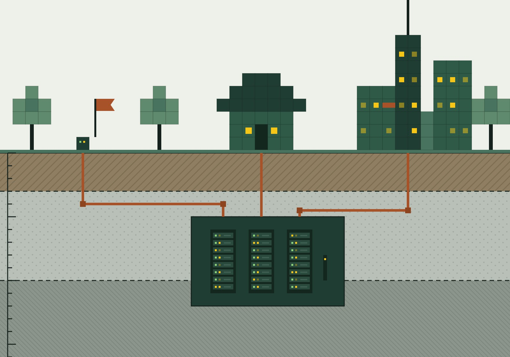
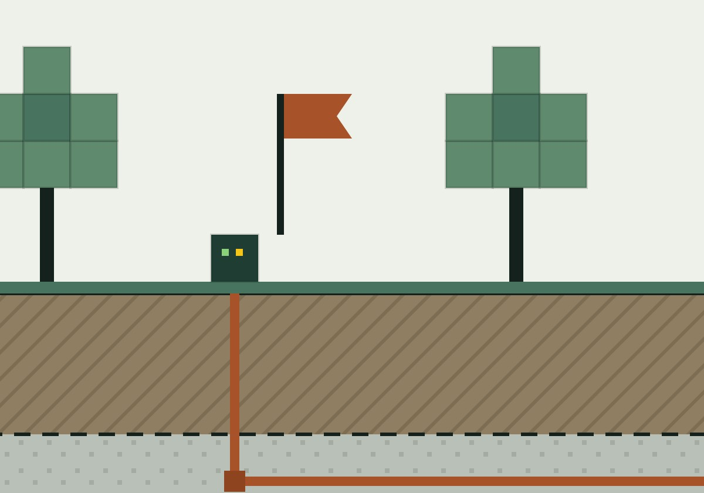
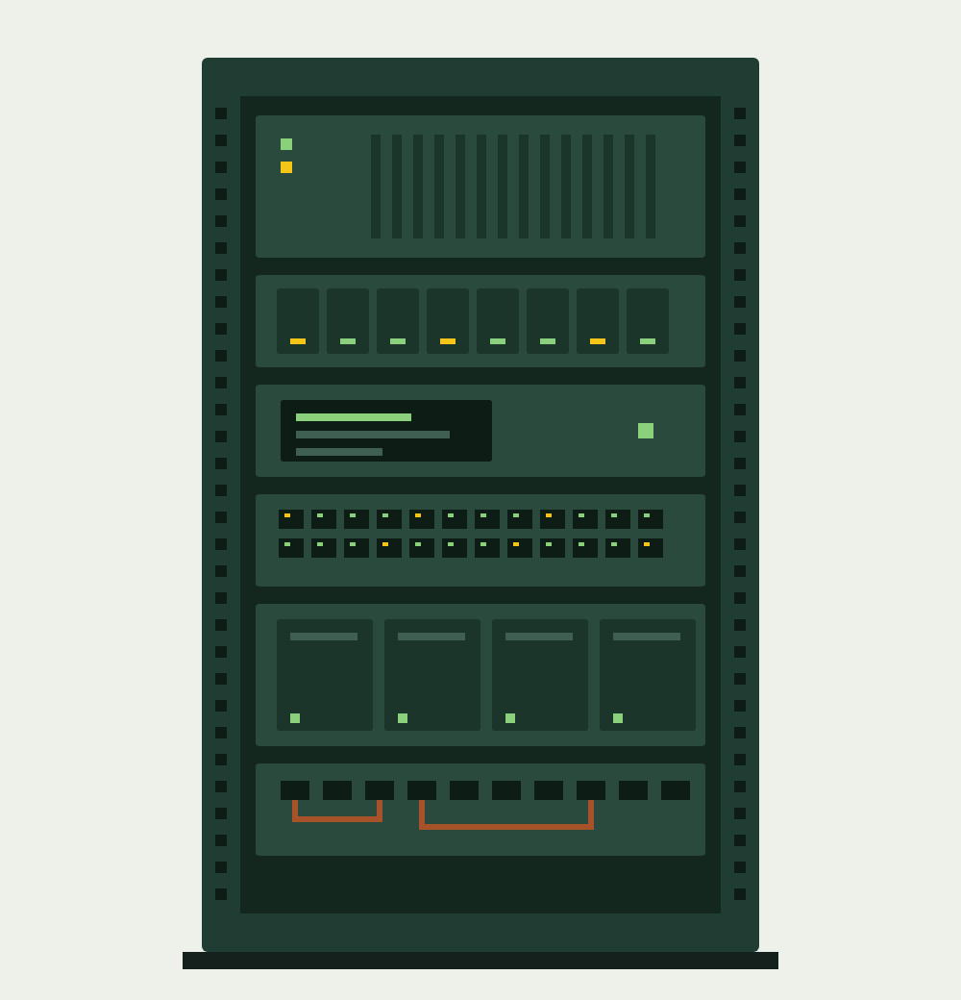

Хостинг, с которого удобно начать и расти
Игровой сервер, бот, сайт или приложение — начните с нужных ресурсов и управляйте проектом через понятную панель.
- Современное оборудование
- Понятные ресурсы
- Помощь с запуском
Игровой сервер, бот, сайт или приложение — начните с нужных ресурсов и управляйте проектом через понятную панель.


Сервер для друзей или сообщества. Подбор конфигурации зависит от версии, сборки, модов, плагинов и предполагаемой нагрузки.
Обсудить задачуРазмещение серверов для игровых сообществ. Доступные игры и требования уточняются при выборе конфигурации.
Обсудить задачуПлощадка для Telegram- и Discord-ботов, небольших веб-проектов и приложений. Среда запуска подбирается под ваш стек.
Обсудить задачуОтдельный вариант для проектов, которым нужны собственная среда и больший контроль над настройкой.
Обсудить задачу
Начать можно с небольшого проекта. По мере его развития важны понятные ограничения, удобные инструменты и возможность изменить конфигурацию.
Линейки на Ryzen и NVMe позволяют подобрать основу для разных задач.
Основные действия с игровым сервером доступны в веб-панели.
Использование памяти и диска помогает заметить, когда проекту нужна оптимизация или другая конфигурация.
DDoS-защита снижает риски сетевых атак. Возможности защиты зависят от выбранной услуги.
Возможность сохранить и восстановить данные учитывается при выборе условий размещения.
Опишите задачу и ограничения — это поможет подобрать подходящий вариант.
Для игровых серверов и поддерживаемых приложений предусмотрена веб-панель: управление запуском, работа с файлами, консоль и просмотр использования ресурсов.
Три экрана: листайте вбок, нажмите, чтобы увеличить.
Уточнить возможности для моего проектаДля небольших проектов, которым важен бюджет и подходящий объём ресурсов.
Обсудить стартДля более требовательных задач. Итоговый результат зависит от выделенных ресурсов и самой нагрузки.
Обсудить нагрузкуДля нескольких сервисов, нестандартного стека или особых требований. Начнём с описания вашей задачи.
Обсудить конфигурациюОбъём памяти, диска, процессорные лимиты, дополнительные возможности и стоимость определяются при подборе. Модель процессора указывает на серверную линейку и не означает выделение всего процессора одному проекту.
Что хотите запустить, какая ожидается нагрузка и что важно для вас.
Уточните ресурсы, возможности управления и бюджет.
После согласования условий можно перейти к настройке и размещению.
Начните с описания версии, сборки и ожидаемой нагрузки. Моды, плагины и настройки мира влияют на требования, поэтому одного числа игроков недостаточно.
Для основных действий с игровым сервером предусмотрена веб-панель. Работа с VPS и нестандартными приложениями может требовать навыков администрирования.
Да, такие сценарии входят в концепцию сервиса. При подборе нужно уточнить язык, среду запуска, базу данных и другие зависимости.
Сначала оценить использование ресурсов и настройки, затем обсудить подходящую конфигурацию. Возможность и порядок переноса зависят от услуги.
Нет. Она предназначена для снижения риска сетевых атак. Стабильность зависит также от нагрузки, настроек приложения и внешних условий.
От выбранного направления, выделенных ресурсов и дополнительных возможностей. Поэтому точные условия подбираются под задачу.
Укажите направление и коротко опишите задачу. Например: Minecraft с модами, Telegram-бот на Python или небольшой сайт с базой данных.
Учебный демонстрационный сайт. Форма передаёт заявку автору работы; оплата и оформление хостинга здесь не производятся.
Данные из формы (имя, email, направление и описание задачи) получает только автор сайта. Они нужны, чтобы ответить на заявку. Их не публикуют, не передают другим людям и не используют для рекламы. Оплатить или заказать хостинг через сайт нельзя. Чтобы удалить свои данные, напишите об этом в новой заявке.